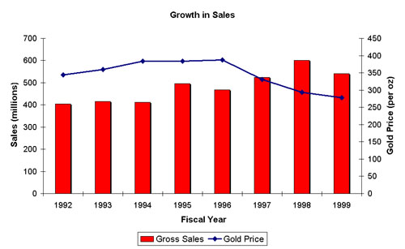
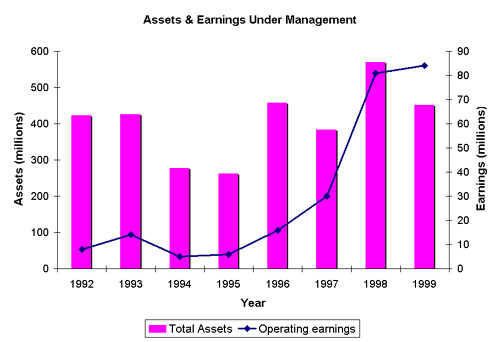

Executive Resume
1234 My Way, Yourtown, NY 99999
Phone: (999) 999-9999 Email: jdoe@myhometown.com
CFO/Senior Financial Executive, Equity Financing, Strategic Planning, Corporate Restructuring, Strategic Negotiations, Acquisitions and Strategic Alliances, Treasury and Risk Management, International Operations, Operations Management, Turnaround Management
Attained industry-recognized results as a key advisor to the CEO, member of the senior executive team and a chief financial officer in the global natural resource industry. Specialized in the mining industry with leading, publicly-traded global enterprises. Accomplished in sophisticated, innovative corporate restructuring and turnaround of multi-division organizations. Recognized for sound fiscal and operational management, strategic partnerships and acquisitions resulting in enhanced profitability, reduced costs and optimized shareholder value. Practical experience with public reporting, investor relations, strategic negotiations and international business. Strong team-building, leadership, motivation and communication skills coupled with insights into emerging opportunities, trends, issues and challenges in the global economy.
Solid Gold Corporation
Sacramento, California
Senior Vice President and Chief Financial Officer
1999 to present
Led the financial and acquisition efforts of a turnaround company, improved its financial condition and positioned it for sale, which was the critical objective of this interim position. Responsible for the treasury, public reporting, acquisitions and investor relations activities of the organization. Directed the accounting and administration staff.
Investments Inc
Sacramento, California
Vice President and Chief Financial Officer
1997 to 1999
Responded to the depressed commodity environment by merging the financial and administrative activities of two regional subsidiaries representing assets of $960 million and sales in excess of $500 million per annum. Restructured the treasury, accounting, office services and information systems in three countries and the planning group for nine discrete production centers in two countries. Merged the Mexican, Canadian and United States financial and administrative groups with a 50 percent staff reduction, achieving payback within one year.
John H. Doe Page 2

Investments US Inc.
San Francisco, California
CFO, Corporate Secretary and Treasurer
1991 to 1997
Directed and coordinated the financial function and production units of the U.S. and Mexican subsidiaries of an international gold and copper producing company with assets on four continents. Directed the subsidiaries' joint venture, acquisition and strategic planning efforts in the U.S. and Mexico. Directed the accounting, treasury, and risk management personnel.

John H. Doe Page 3
Heavy Metals, Inc.
Vancouver, B.C.
Assistant to the CEO
1987 to 1991
Coordinated the business activities for the chief executive officer of an $8 billion company with operations on four continents. Completed numerous special projects relating to organizational development, acquisitions, public and internal reporting and strategic planning.
Manager, Molybdenum Sales
1983 to 1987
Directed the European and U.S. molybdenum sales teams and marketed molybdenum products in Asia and Canada. Developed the sales, logistics and pricing strategies in all markets and conducted market research and competitive analyses.
John H. Doe Page 4
Key Accomplishment Summary
Situation:
The company's annual planning process had become more of an exercise in accounting rather than a planning and communications tool. This situation had developed because management failed to clearly articulate the financial metrics that were critical for the company's ongoing success and failed to establish measurable objectives for each operating unit.
Action Plan:
Results:
The educational program was a huge success and the program was rolled out to the other three regions in the company. Many individuals commented on the fact that they finally understood how each one of them could contribute to increasing the company’s profitability and share price. Establishing measurable objectives for each operating unit and each significant spending program led to a reduction in spending and a more rational evaluation of spending requests. Equally important, by identifying the expected returns from each program, management was better able to allocate the company’s financial resources and the employees viewed the capital allocation decisions to be less arbitrary.
Key Accomplishment Summary
Situation:
The company was about to embark on a $250 million capital project. The challenge was to optimize the financing, given the complexities of international tax laws. The alternatives considered were to use a domestic project loan and equity financing structure or, alternatively, to utilize the parent company’s balance sheet, which would also require the parent company to borrow funds.
Action Plan:
Results:
The parent successfully raised the necessary financing on very favorable terms. A novel cross-border structure was developed that financed the subsidiary achieving a double-dip interest deduction and avoiding any U.S. or Canadian tax on the interest income received by the parent from the subsidiary. The original capital injection, which was a loan, was repatriated to the parent without being subject to any withholding taxes; this alone saved 5 percent on $250 million. The net result was a tax savings of over $100 million, which materially levered up the project return.
Key Accomplishment Summary
Situation:
A significant company asset had become a financial drain to the corporation. It was losing money and consuming cash. Because of these problems, the business unit's management was focusing its attention more on secondary objectives such as safety, housekeeping and the environment than on addressing the primary cost and production issues. The majority of the workforce was unaware of the precarious financial situation the business unit was in.
Action Plan:
Results:
Reduced costs by $8 million per year by downsizing the workforce. Created an alternative production plan that maintained production at 90 percent of the previous levels. The unit became cash positive, which prevented its closure.
Key Accomplishment Summary
Situation:
Given a four-month timeframe to combine the administrative groups of two subsidiaries in order to reduce overheads. The decision was based on declining product prices and pessimistic projections for future prices.
Action Plan:
Results:
The United States office was closed within three months. Staffing levels were reduced by 50 percent and payback from this restructuring was achieved within nine months. All activities were successfully transferred to the new group without incident.
Key Accomplishment Summary
Situation:
The company was within months of going bankrupt due to excess corporate spending, management’s inability to close a transaction and a failure to address the cash consumption of a chronically under-performing asset. All this time the price of the product was falling in the international marketplace compounding the cash-flow challenges.
Action Plan:
Results:
Turned a failing company around and positioned it for sale. The shareholders' investment has been saved and they should become 15 percent owners of a more viable organization.
Industry Insights
Developing and Implementing Strategic Plans
The development of a strategic plan begins with the identification of the company's internal strengths and weaknesses, followed by an analysis of its competitive position. This involves a detailed analysis of the company's financial position and its recent financial results. The CFO should play a lead role in these tasks. The final plan will have both internal and external objectives. The internal objectives deal with enhancing profitability. This is an area where the CFO should lead in analysis and in establishing forward-looking targets. With respect to the external objects, the CFO should be part of a team entrusted to identify alliances or acquisitions and participate in the execution of these objectives.
Sourcing of Financial Capital
It is the CFO's responsibility to identify the amount of external capital required or the amount of internally generated funds retained for reinvestment in the company. He/She should identify the type of capital raised and decide if the terms and conditions are acceptable. The capital could be any type of equity. The debt may be leases (on or off balance sheet), debentures or bank debt. In all cases, it should be the CFO's responsibility to ensure the firm's capital structure is optimized.
Risk Management
The CFO should identify the types and degree of risk management appropriate for the company’s activities. This may include the purchase of insurance (property, liability, key employee, customer, et al), the appropriateness of its cost or whether the firm should self-insure. The CFO should determine whether some form of hedging is desirable for the monetary assets. This risk management may be in the form of swaps, fixed contracts, natural hedges or derivatives. .
Accounting Policies and Financial Controls
The CFO should determine the application of accounting policies in accordance with GAAP and ensure the firm is in conformance with such policies. The CFO should also develop and ensure compliance with all required financial controls to safeguard the assets of the company.
Technology Leader
Since the accounting and information systems are usually the largest part of the MIS system, the CFO must remain abreast of developments in the technologies.
Communication with Owners and Potential Investors
Because a majority of the communications with owners and potential owners is the explanation of the firm's past financial performance or its future expectations, the CFO should take a lead role in this communications program. This will entail a detailed understanding of the firm's profitability, operations and competitive position. The CFO will have to be aware of developing economic and industry trends, and have full knowledge of rules and regulations governing such disclosure, such as the new FD guidelines.
Interaction with and Negotiation of Joint Ventures
Globalization of the economy and the broadening sophistication of customer demands will lead increasingly to the formation of joint ventures and strategic acquisitions. The CFO should play a lead role in the interaction with these business partners since the agreements and information needs will tend to be financial. The CFO needs to be highly skilled in relationship management and negotiation techniques.